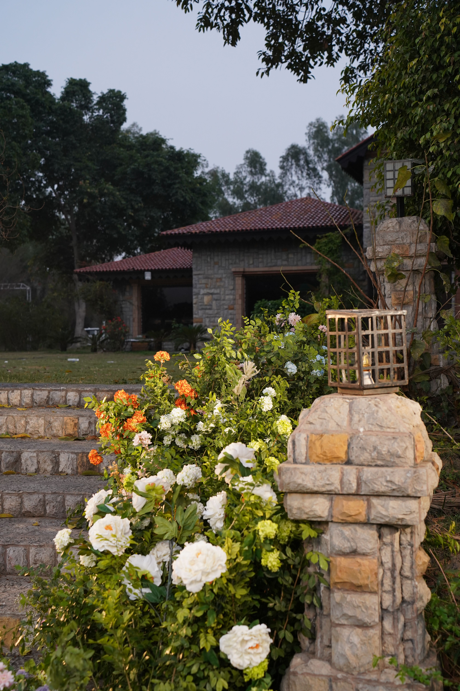

In This Article
- Introduction
- Understand What Potting Substrate Does
- Balance Drainage, Aeration, and Moisture Retention
- Avoid Using Garden Soil Alone in Containers
- Choose a Mix for Tropical Houseplants
- Choose a Mix for Cacti and Succulents
- Choose a Mix for Herbs and Edible Plants
- Choose a Mix for Orchids and Epiphytes
- Consider Container Size and Material
- Check the Ingredients on the Bag
- Adjust the Mix When Necessary
- Understand When Substrate Needs Replacing
- Store Potting Mix Correctly
- Common Mistakes to Avoid
- Frequently Asked Questions
- Conclusion
Introduction
The growing medium in a pot has a major influence on root health because container plants depend on a limited volume for water, air, nutrients, and physical support. A good substrate should hold enough moisture for the plant without remaining waterlogged, while also maintaining pore space so roots receive oxygen.
There is no universal mix that is ideal for every plant. The correct balance depends on species, climate, pot size, container material, watering habits, and where the plant is kept.
Understand What Potting Substrate Does
A container substrate supports roots physically, stores water and nutrients, and provides air spaces. These functions need to remain balanced as the mix becomes wet and dry.
When a mix collapses or compacts too much, water may drain slowly and oxygen around roots can decrease. When a mix is excessively coarse for a moisture-loving plant, it can dry too quickly and require constant watering.
The goal is not to maximize one property. It is to create a medium suited to the plant and the conditions.
Balance Drainage, Aeration, and Moisture Retention
Drainage refers to how readily excess water moves through the container. Aeration refers to the amount of air-filled pore space available to roots. Moisture retention describes how much water the mix holds after excess has drained.
These properties interact. A very fine, compact mix can hold a great deal of water but little air. A very coarse mix can have excellent aeration but dry faster than the plant can tolerate.
Choose the balance according to the species. Plants adapted to dry conditions generally need faster drying and more aeration, while plants that prefer consistent moisture may benefit from a mix that retains more water without becoming saturated.
Avoid Using Garden Soil Alone in Containers
Ordinary garden soil often behaves poorly in pots because its structure changes when confined in a container. It can compact, drain slowly, and reduce aeration.
Commercial potting mixes are formulated to remain lighter and more porous in containers. Their ingredients may include composted bark, coir, peat alternatives, perlite, pumice, mineral components, compost, or other materials depending on the product.
If a recipe includes garden soil, it should be designed specifically for container use and the needs of the plant rather than simply filling the pot with soil taken from the yard.
Choose a Mix for Tropical Houseplants
Many tropical foliage plants appreciate a substrate that holds moderate moisture while allowing excess water to drain and roots to remain aerated.

A general indoor potting mix can work for many species, but some plants benefit from additional coarse material such as bark or mineral components when the base mix is very dense.
Do not assume that every tropical plant has the same needs. Aroids, palms, begonias, ferns, and other groups can differ significantly in root structure and moisture preference.
Choose a Mix for Cacti and Succulents
Many cacti and succulents are sensitive to prolonged wet conditions around their roots. They usually benefit from a substrate that drains freely and contains a meaningful proportion of coarse mineral or porous material.
Commercial cactus and succulent mixes vary. In humid climates or in large plastic pots, some products may still remain wet longer than expected. Observe drying time and adjust only if necessary.
Fast drainage does not mean never watering. The plant still needs water according to its species and growing conditions, but the substrate should not remain saturated for excessive periods.
Choose a Mix for Herbs and Edible Plants
Edible container plants often need a substrate that balances moisture retention with drainage because frequent growth and harvesting can increase water and nutrient demand.
Use a product intended for edible or container gardening when appropriate, and follow the manufacturer's guidance for fertilizer and amendments.
Herbs have different preferences. Mediterranean herbs such as rosemary and thyme generally need faster drainage than basil or mint, so a single mix is not always ideal for every herb in the same container.
Choose a Mix for Orchids and Epiphytes
Epiphytic orchids often grow naturally with roots exposed to air rather than buried in dense soil. They commonly require specialized orchid media made from bark, mineral material, or other coarse ingredients.

Do not pot an epiphytic orchid in ordinary dense houseplant soil unless the species specifically requires it. Poor aeration can quickly create root problems.
Other epiphytes may also need open, airy mixes. Identify the plant before choosing the substrate instead of applying general houseplant rules.
Consider Container Size and Material
The pot changes how the substrate behaves. Terracotta allows more moisture to evaporate through the container walls, while plastic and glazed ceramic retain moisture longer.
Large pots usually dry more slowly than small pots when all other conditions are similar because they contain a greater volume of substrate.
When changing pot material or size, reassess the growing medium and watering routine together. A mix that works well in a small clay pot may remain wet too long in a much larger plastic container.
Check the Ingredients on the Bag
Read the product label instead of relying only on the name printed on the front. Look for the intended use, ingredients, fertilizer content, pH information when provided, and any specific instructions.
Two products both labeled indoor potting mix can have very different textures and water-holding characteristics.
If the mix contains slow-release fertilizer, take that into account before adding additional fertilizer. Over-fertilization can damage roots.
Adjust the Mix When Necessary
It is sometimes useful to modify a commercial substrate, but adjustments should solve a specific problem. Adding perlite, pumice, bark, coir, or another component changes aeration, drainage, or moisture retention depending on the material.

Do not add random ingredients simply because they appear in online recipes. The ideal proportion depends on the plant, climate, pot, and original mix.
Make changes gradually and observe how quickly the substrate dries. The best recipe is the one that supports healthy roots under your actual growing conditions.
Understand When Substrate Needs Replacing
Potting mixes break down over time. Organic components decompose, particles become smaller, and the substrate can become compacted or difficult to re-wet evenly.
Signs that replacement may be useful include persistent compaction, water running down the sides without wetting the root ball, unpleasant odor, salt buildup, or a root system that has outgrown the container.
Do not replace substrate on a rigid calendar if the plant is healthy and the mix still functions well. Repotting itself is a disturbance, so it should have a clear reason.
Store Potting Mix Correctly
Keep unused substrate dry and protected from contamination. Close bags securely and store them away from standing water, pests, and direct exposure to weather.
If a stored bag develops a strong unusual odor, visible mold, insects, or other signs of contamination, inspect it carefully before use.
Label custom mixes so you remember their ingredients and intended plants. This makes future adjustments easier.
Common Mistakes to Avoid
Avoid filling containers with dense garden soil alone. Do not assume that a thick layer of stones at the bottom will correct a poorly draining mix.
Avoid choosing substrate only by plant category without considering climate, pot material, and watering habits.
Do not add fertilizer automatically when the commercial mix already contains it, and do not alter a substrate without understanding what problem you are trying to solve.
Frequently Asked Questions
What is the best potting mix for all plants?
There is no single ideal mix. Plants differ in moisture, aeration, nutrient, and root requirements, so the substrate should match the species and growing conditions.
Can I use garden soil in pots?
Garden soil alone is usually not ideal because it can compact and drain poorly in containers. Use a substrate designed for container culture.
Should I put stones in the bottom of the pot?
A drainage hole and a suitable substrate are more important. A thick layer of stones does not replace proper drainage.
How do I know if my mix holds too much water?
Observe how long it stays wet, whether the plant shows root stress, and whether drainage is slow. Compare those conditions with the needs of the species.
Observe Watering After Repotting
After moving a plant into fresh substrate, check moisture more carefully for the first few weeks. A new mix may absorb and release water differently from the old one, so the previous watering schedule may no longer be appropriate.
Judge watering by the actual condition of the root zone rather than by the appearance of the surface alone. This helps you learn how the new combination of plant, pot, and substrate behaves.
Observe Watering After Repotting
After moving a plant into fresh substrate, check moisture more carefully for the first few weeks. A new mix may absorb and release water differently from the old one, so the previous watering schedule may no longer be appropriate.
Judge watering by the actual condition of the root zone rather than by the appearance of the surface alone. This helps you learn how the new combination of plant, pot, and substrate behaves.
Observe Watering After Repotting
After moving a plant into fresh substrate, check moisture more carefully for the first few weeks. A new mix may absorb and release water differently from the old one, so the previous watering schedule may no longer be appropriate.
Judge watering by the actual condition of the root zone rather than by the appearance of the surface alone. This helps you learn how the new combination of plant, pot, and substrate behaves.
Observe Watering After Repotting
After moving a plant into fresh substrate, check moisture more carefully for the first few weeks. A new mix may absorb and release water differently from the old one, so the previous watering schedule may no longer be appropriate.
Judge watering by the actual condition of the root zone rather than by the appearance of the surface alone. This helps you learn how the new combination of plant, pot, and substrate behaves.
Observe Watering After Repotting
After moving a plant into fresh substrate, check moisture more carefully for the first few weeks. A new mix may absorb and release water differently from the old one, so the previous watering schedule may no longer be appropriate.
Judge watering by the actual condition of the root zone rather than by the appearance of the surface alone. This helps you learn how the new combination of plant, pot, and substrate behaves.
Observe Watering After Repotting
After moving a plant into fresh substrate, check moisture more carefully for the first few weeks. A new mix may absorb and release water differently from the old one, so the previous watering schedule may no longer be appropriate.
Judge watering by the actual condition of the root zone rather than by the appearance of the surface alone. This helps you learn how the new combination of plant, pot, and substrate behaves.
Observe Watering After Repotting
After moving a plant into fresh substrate, check moisture more carefully for the first few weeks. A new mix may absorb and release water differently from the old one, so the previous watering schedule may no longer be appropriate.
Judge watering by the actual condition of the root zone rather than by the appearance of the surface alone. This helps you learn how the new combination of plant, pot, and substrate behaves.
Conclusion
Choosing the right substrate for potted plants means balancing drainage, aeration, and moisture retention according to the plant, pot, climate, and watering routine.
Read product labels, avoid treating every plant the same, and adjust only when there is a clear reason. A suitable growing medium makes watering easier to manage and creates healthier conditions for roots over the long term.